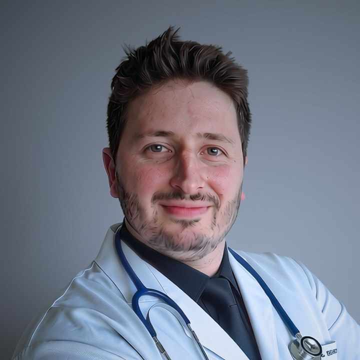

Mentoria
Do diploma ao mercado de trabalho
Orientação de carreira e discussão de casos clínicos para médicos recém-formados.
com Dr. Emanuel Behrens · MÉDICO · CRM-SC 28.919
Sua jornada
- 01
Inscrição
Depois da compra, entramos em contato para agendar e você preenche o formulário de entrada.
- 02
Encontros iniciais
Orientação e gestão de carreira, antes de você começar a trabalhar.
- 03
Primeiro trabalho
As assessorias começam a contar no seu primeiro plantão ou no início na UBS.
- 04
Assessoria
Encontros semanais com o Dr. Emanuel, usados em até 60 dias.
Encontros individuais, por videoconferência, em horários combinados com você.
Como são os encontros
Orientação de carreira
Seu momento, portas de entrada no mercado, como funciona um plantão, residência e um plano para os próximos 90 dias.
Gestão de carreira
Informações sobre abertura de CNPJ, escolha de contador, seguro, imposto de renda e mais.
Assessoria de casos clínicos
Discussão dos casos que você atendeu, sempre anonimizados e depois do atendimento.
Valores
1 assessoria
R$ 1.797
Quero participar2 assessorias
R$ 2.397
Quero participar3 assessorias
R$ 2.897
Quero participar4 assessorias
R$ 3.397
Quero participar
Parcelamento no cartão, pelo Mercado Pago.
Dúvidas
Quem pode participar?
Médicos que já colaram grau e têm inscrição ativa no CRM. A mentoria é para quem está no início da prática profissional.
Como são os encontros?
Individuais, por videoconferência, em horários combinados com você. Depois da compra, entramos em contato para agendar e você preenche o formulário de entrada.
Ainda não comecei a trabalhar. Posso me inscrever?
Pode. Os encontros iniciais acontecem antes. Depois, aguardamos o seu primeiro trabalho: as assessorias passam a contar a partir do primeiro plantão ou do início na UBS, que deve acontecer em até 3 meses depois da compra. A partir daí, você tem 60 dias para usá-las. Assessorias não usadas nesse prazo viram crédito por mais 3 meses.
Como os casos são discutidos?
Sempre de forma anonimizada, sem nome, prontuário, foto ou qualquer dado que identifique o paciente, e sempre depois do atendimento. A discussão é educacional: a conduta e o registro continuam sendo do médico que atendeu. Todos os participantes assinam um termo de sigilo.
Posso falar com o Dr. Emanuel durante o plantão?
Não. A mentoria não inclui orientação em tempo real sobre pacientes em atendimento.
O encontro de gestão de carreira substitui um contador?
Não. A gestão de carreira traz informações sobre abertura de CNPJ, escolha de contador, seguro, imposto de renda e mais. Para a sua situação específica, procure um contador.
Como é o pagamento?
Pelo Mercado Pago, com parcelamento no cartão. Cada opção de valor tem o seu próprio link de pagamento.
A partir de R$ 1.797 · parcelamento no cartão
Ver valoresA mentoria é uma atividade educacional entre médicos. Não é atendimento a pacientes, não inclui orientação em tempo real e não garante resultados. Casos clínicos são discutidos sem dados que identifiquem pacientes.